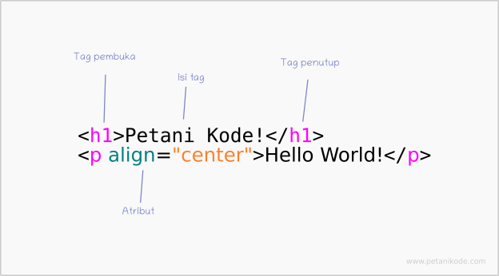

Tag adalah sebuah penanda awalan dan akhiran dari sebuah elemen di HTML.
Tag dibuat dengan kurung siku (<...>), lalu di dalamnya berisi nama tag dan kadang juga ditambahkan dengan atribut.
Contoh: <'p'>, <'a'>, <'body'>, <'head'>, dan sebagainya.
Tag selalu ditulis berpasangan. Ada tag pembuka dan ada tag penutupnya.
Namun, ada juga beberapa tag yang tidak memiliki pasangan penutup.
Tag penutup ditulis dengan menambahkan garis miring (/) di depan nama tag.

Setiap tag memiliki fungsi masing-masing. Ada yang digunakan untuk membuat judul, membuat link, membuat paragraf, heading, dan lain-lain.
| Berikut ini daftar tag-tag dasar, yang menurut saya: | |
| tag | fungsi |
| <'!DOCTYPE html'> | untuk deklarasi type dokumen |
| <'html'> | tag utama dalam HTML |
| <'head'> | untuk bagian kepala dari dokumen |
| <'title'> | untuk judul web |
| <'body'> | untuk bagian body dari dokumen |